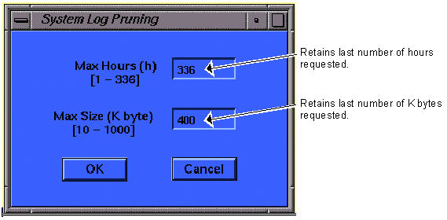

Operating Documentation
Direction 5133330-3, Rev# 14
Signa EXCITE HD 3.0T Service Methods
Module Version 1.0, Version Date 4/27/07
Operating Documentation |
The System Error log can get very lengthy and unnecessarily use up memory. The following procedure should be used to prune (clean up) your error log. This utility does not continuously monitor the size of the error log. It does prune the log to the specifications that are entered each time the utility is run.
On the Service Desktop, select the [C Shell] button.
Type <prune> and press <Enter>.
| NOTE: | Use both the hours and K byte to prune log. (e.g., if set to 24 hours and 50 k bytes but there are 100 K bytes of errors in last 24 hours, it will prune to 50 K bytes; this could cause only 1- 23 hours to be saved.) |
Enter the hours and/or size for Pruning criteria. (See Illustration 1 for the recommended settings.)
Click on [OK].
Exit the C-Shell by typing <exit> and pressing <Enter>.
Illustration 1: System Log Pruning Dialog Box
